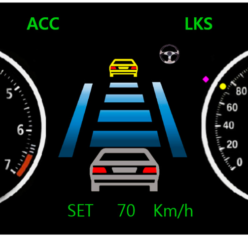

Adaptive Cruise Control
Coursework (Team Project - Spring 2025)
Overview
Longitudinal adaptive cruise model: keep a safe, speed-dependent gap to a lead car. The study compared numerical integrators and tuned PID performance in MATLAB/Simulink.
What I Did
01 | System Dynamics
PlantModeled cruise, acceleration, and emergency braking (0.8g) regimes.
02 | Control Architecture
PID2-second gap rule with tuned gains (Kp=0.5, Kd=0.8) for response without harsh oscillation.
03 | Numerical Integration
SolversCompared Euler vs adaptive ODE45; ODE45 held up better in transients.
04 | Robustness Analysis
ChecksTested sensor latency and sinusoidal lead speeds against comfort limits.
Scope | Controls Coursework
Simulation study of longitudinal ACC. Focus on plant modeling, PID tuning, and integrator comparison.
Control Loop & Simulation Specs
Simulation Constraints
Feedback Loop
(Target)
DYNAMICS
(Out)
Tech Stack
Takeaway
PID ACC with ODE45 integration that held gap under latency and lead-speed transients.